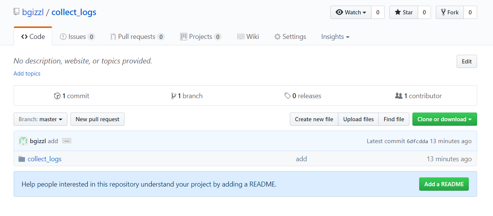
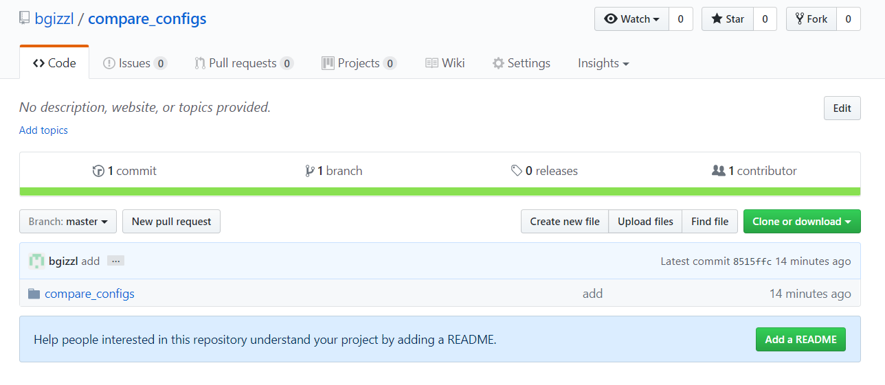

Ansible¶
はじめに¶
本ドキュメントは構成管理ツールであるAnsibleの導入手順について説明したものとなります。
インストール手順¶
注釈
本手順はCentOS7.2を想定して書かれています。
尚、作業の際はrootで作業することを想定しています。
事前にOSが正常にセットアップされているものとします。
1. YUMリポジトリにEPELを追加
# yum install -y epel-release
2. Ansibleのインストール
# yum install -y --enablerepo=epel ansible
3. バージョンの確認
# ansible --version
4. Ansibleの動作確認
# ansible -m ping 127.0.0.1
ヒント
結果に SUCCESS が表示されていること
注釈
バージョンを指定してインストールする場合、別途手順となります。
詳細は下記を参照のこと。
Ansibleのメリット¶
Ansibleには下記のような利点があります。このことからAnsibleは構成管理ツールとして優位性があると考えられます。
- 冪等性
- エージェントレス
- モジュールによる拡張
- コードがシンプル
Ansibleの構成要素¶
Ansibleを使いこなすにあたって特に重要な3つの要素を記載します。
- インベントリファイル
Ansibleの実行対象を記述したファイルとなります。
/etc/ansible/hostsに下記を追記します。[testservers] test01 ansible_host="対象サーバのIPアドレス"
ansible all -m pingを実行し、対象サーバが SUCCESS となることを確認しましょう。
- Playbook
Ansibleの実行処理をコードで記述したものとなります。このYML形式のコードを元にAnsibleは処理を実行します。
- コンフィグファイル
Ansibleの設定情報が記載されています。
設定変更が必要な際
/etc/ansible/ansible.cfg を編集します。ベストプラクティス¶
Playbookを作成するうえで、可読性、運用性を高めるために最適なディレクトリ構造があります。作成にとりかかる前に理解をしておきましょう。
- ディレクトリ構造
公式ドキュメントより:http://docs.ansible.com/ansible/playbooks_best_practices.html
production # inventory file for production servers staging # inventory file for staging environment group_vars/ group1 # here we assign variables to particular groups group2 # "" host_vars/ hostname1 # if systems need specific variables, put them here hostname2 # "" library/ # if any custom modules, put them here (optional) filter_plugins/ # if any custom filter plugins, put them here (optional) site.yml # master playbook webservers.yml # playbook for webserver tier dbservers.yml # playbook for dbserver tier roles/ common/ # this hierarchy represents a "role" tasks/ # main.yml # <-- tasks file can include smaller files if warranted handlers/ # main.yml # <-- handlers file templates/ # <-- files for use with the template resource ntp.conf.j2 # <------- templates end in .j2 files/ # bar.txt # <-- files for use with the copy resource foo.sh # <-- script files for use with the script resource vars/ # main.yml # <-- variables associated with this role defaults/ # main.yml # <-- default lower priority variables for this role meta/ # main.yml # <-- role dependencies library/ # roles can also include custom modules lookup_plugins/ # or other types of plugins, like lookup in this case webtier/ # same kind of structure as "common" was above, done for the webtier role monitoring/ # "" fooapp/ # ""
モジュール¶
Playbookはモジュールを組み合わせて作成されます。モジュールの一覧は公式ドキュメントにありますが、見難いので代表的なものをピックアップします。
- file
ファイルやシンボリックリンクやディレクトリを作成したり、削除したり、属性変更するモジュール。
- copy
ローカルにあるファイルやディレクトリを、対象サーバにコピーする。
- shell
クライアント側でコマンドを実行する。
- fetch
対象サーバからローカルにファイルを取得する。Copyモジュールとの違いに注意。
ログ収集Playbook¶
Ansibleを使用したログ収集のPlaybookを紹介します。
- まず下記リンクよりファイルをダウンロード(Clone or downloadを押下)します。
ダウンロードリンク:https://github.com/bgizzl/collect_logs
{kind=link}
- 「collect_logs」ディレクトリを
/etc/ansible/にディレクトリごと格納します。
ディレクトリ構造
/etc/ansible/collect_logs/ hosts main.yml roles/testservers/tasks main.yml
- インベントリファイルの対象サーバを編集します。
- Playbookを実行します。
# ansible-playbook -i /etc/ansible/collect_logs/hosts /etc/ansible/collect_logs/main.yml
- ローカルサーバにログが収集されていることを確認しましょう。
# ls -a /var/log/ansible-collect-logs/
システム情報収集Playbook¶
Ansibleを使用したシステム情報収集のPlaybookを紹介します。
- まず下記リンクよりファイルをダウンロード(Clone or downloadを押下)します。

{kind=link}
- 「compare_configs」ディレクトリを
/etc/ansible/にディレクトリごと格納します。
ディレクトリ構造
/etc/ansible/compare_configs/ create-config.sh hosts main.yml roles/testservers/tasks main.yml
- インベントリファイルの対象サーバを編集します。
- Playbookを実行します。
# ansible-playbook -i /etc/ansible/compare_configs/hosts /etc/ansible/compare_configs/main.yml
- ローカルサーバにシステム情報が収集されていることを確認しましょう。
# ls -a /var/log/ansible-compare-configs/
Playbook実行結果¶
Playbookが実行されると最後に結果が表示されます。
| 判定項目 | 説明 | 判定結果 |
|---|---|---|
| OK | 定義された状態となっている | 数値:処理タスク数 |
| Changed | 定義された状態に変更が行われた | 数値:処理タスク数 |
| Unreachable | リモートホストへの接続結果判定 | 0=正常処理・1=異常処理 |
| Failed | タスクの実行結果判定 | 0=正常処理・1=異常処理 |
トラブルシューティング¶
Ansibleのトラブルシューティングについていくつか紹介します。
- 結果がunreachable(疎通不可)となる。
⇒ SSH出来るようにしましょう。
・対象サーバにSSHは可能ですか？
・.ssh/known_hostsに対象サーバの記載がありますか？
・.ssh/known_hostsの対象サーバの記載は古くありませんか？
・pingは通りますか？
・SSHするユーザーは正しく存在するユーザーですか？
- 結果がfailedとなる。
⇒ failedには様々な原因が考えられます。まずはPlaybookコマンドに
-vvv をつけてデバッグしてみましょう。・例:
# ansible-playbook -vvv -i /etc/ansible/collect_logs/hosts /etc/ansible/collect_logs/main.yml・原因が判明したら、その原因を取り除きます。
・その他構文エラーも多く見られます。一度Playbookを見直してみましょう。
Ansible Galaxy¶
AnsibleにはGalaxyと呼ばれるユーザー同士がPlaybookをシェアできるサイトがあります。
また、ここではシェアされたPlaybookをインストールすることも可能です。
Ansible Galaxy :https://galaxy.ansible.com/
- 使い方
Ansibleをインストールした際に
ansible-galaxy コマンドも同時にインストールされています。下記コマンドを使い、playbookやrolesをインストールすることが出来ます。
ansible-galaxy install username.role_name{kind=link}
ヒント
サイトには多くのPlaybookやrolesがあります。色々探してみて、Playbook作成に役立てましょう。